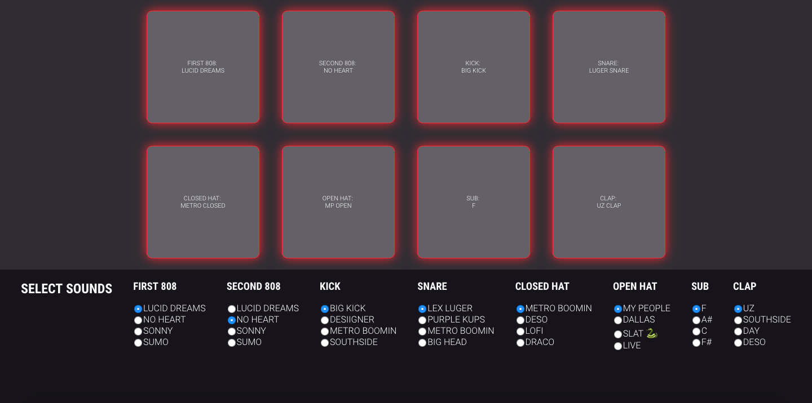

What I've Been Working On
Wanderlist
deployed app | repo
A travel planning app that allows the user to create, view, edit and delete points of interest in cities they want to visit.
Pumpbot
node repo | mongodb repoA Slackbot that posts a random 'Tip of the Day' from a database to the #announcements channel each morning of the workweek. The bot is configured to keep track of what tips have and haven't been posted to ensure there are no repeats posted before the entire list has been used.
React MIDI
work in progress | repo
A bootleg "MIDI controller" that allows the user to select pre-loaded sounds that can be played with a computer keyboard.